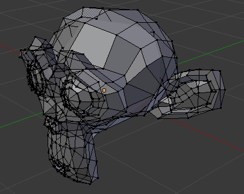

3D View¶
Rendering¶
Depth Buffer Glitches¶
Sometimes when setting a large clipping range will allow you to see both near and far objects, but reduces the depth precision resulting in artifacts.

Model with no clipping artifacts. |

Model with clipping artifacts. |

Mesh with artifacts in Edit Mode. |
{kind=link}
To avoid this:
- Increase the near clipping when working on large scenes.
- Decrease the far clipping when objects are not viewed at a distance.
When perspective is disabled only the far Clip End is used, very high values can still give artifacts.
This is not specific to Blender, all OpenGL/DirectX graphics applications have these same limitations.
Objects Invisible in Camera View¶
If you have a large scene, viewing it through Camera View may not display all of the Objects in the scene. One possibility may be that the clipping distance of the camera is too low. The camera will only show objects that fall within the clipping range.
Performance¶
Slow Rendering¶
There are a couple of reasons why you may be experiencing a slow viewport.
- Old Hardware
- Sometimes your hardware, mainly your graphics card, may be too slow to keep up with your model.
- Upgrade Graphics Driver
- In some cases, slow selection is resolved by using updated drivers.
Slow Selection¶
Blender uses OpenGL for selection, some graphics card drivers are slow at performing this operation.
This becomes especially problematic on dense geometry.
Possible Solutions:
- OpenGL Depth Picking (Preferences)
See .
This option is enabled by default, disabling it may give a better performance at the cost of selection accuracy.
- Upgrade Graphics Driver
- In some cases, slow selection is resolved by using updated drivers. It is generally good to use recent drivers when using 3D software.
- Select Centers (Workaround)
- In Object Mode, holding Ctrl while selecting uses the object center point. While this can be useful on its own, it has the side effect of not relying on OpenGL selection.
- Change Display Mode (Workaround)
- Using Wireframe display mode can be used to more quickly select different objects.
Note
Obviously, the workarounds listed here are not long term solutions, but it is handy to know if you are stuck using a system with poor OpenGL support.
Ultimately, if none of these options work out it may be worth upgrading your hardware.
Tools¶
Invalid Selection¶
There are times when selection fails under some configurations, often this is noticeable in mesh Edit Mode, selecting vertices/edges/faces where random elements are selected.
Internally Blender uses OpenGL for selection, so the graphics card driver relies on giving correct results.
Possible Solutions:
- Disable Anti-Aliasing Multisampling
This is by far the most common cause of selection issues.
There are known problems with some graphics cards when using multisampling.
You can disable this option by:
- Turning multisampling off in your graphics card driver options.
- Turning Multisampling off in the System Preferences.
- Change Anti-Aliasing Sample Settings
Depending on your OpenGL configuration, some specific sample settings may work while others fail.
Unfortunately finding working configuration involves trial & error testing.
- Upgrade Graphics Driver
As with any OpenGL-related issues, using recent drivers can resolve problems.
However, it should be noted that this is a fairly common problem and remains unresolved with many drivers.